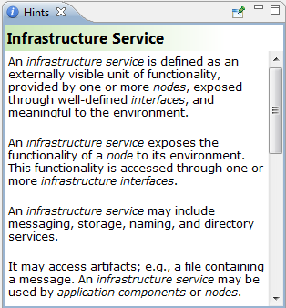

The Hints window shows a hint for the selected element or palette entry. It can be useful to provide basic information about the purpose of the elements and relationships in a model.
The selected hint can be "pinned" by selecting the pin button in the Hints window.

The "Hints" Window